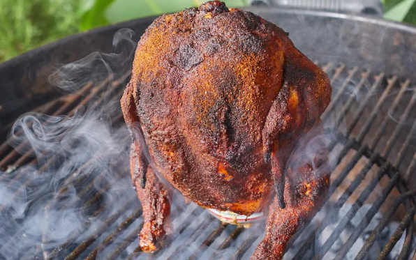

Beer Can Chicken

This beer can-chicken recipe produces deliciously moist chicken. It's perfect for a BBQ on a hot summer day. The other half of the can of beer is for the cook to enjoy while preparing dinner!
Ingredients
- ⅓ cup brown sugar
- 2 tablespoons chili powder
- 2 tablespoons paprika
- 2 teaspoons dry mustard
- ½ teaspoon salt
- ¼ teaspoon ground black pepper
- ½ (12 fluid ounce) can beer
- 1 (3 pound) whole chicken
Steps
- Preheat an outdoor grill for medium-high heat, about 375 degrees F (190 degrees C).
- Mix brown sugar, chili powder, paprika, dry mustard, salt, and black pepper in a small bowl. Place half-full can of beer in the center of a plate.
- Rinse chicken under cold running water. Discard giblets and neck from chicken; drain and pat dry. Fit whole chicken over the can of beer with the legs on the bottom; keep upright. Sprinkle 1 teaspoon of seasoning mix into the top cavity of chicken. Beer may foam up when seasonings fall inside the can. Rub remaining seasoning mix over entire surface of chicken.
- Place chicken, standing on the can, directly on the preheated grill. Close the lid and cook chicken until no longer pink at the bone and the juices run clear, about 1 hour 15 minutes. An instant-read thermometer inserted into the thickest part of the thigh, near the bone should read 165 degrees F (74 degrees C).
- Remove chicken from the grill and discard beer can. Cover chicken with a doubled sheet of aluminum foil, and allow to rest in a warm area for 10 minutes before slicing.